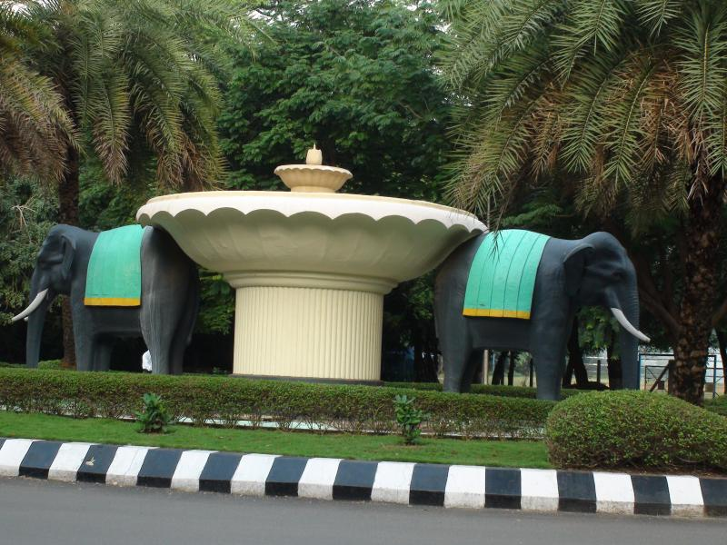

<div class="navbar-wrapper">
    <nav class="navbar navbar-default navbar-fixed-top navbar-scroll" role="navigation">
        <div class="container">
            <div class="navbar-header page-scroll">
                <button type="button" class="navbar-toggle collapsed" data-toggle="collapse" data-target="#navbar" aria-expanded="false" aria-controls="navbar">
                    <span class="sr-only">Toggle navigation</span>
                    <span class="icon-bar"></span>
                    <span class="icon-bar"></span>
                    <span class="icon-bar"></span>
                </button>
            </div>
            <div id="navbar" class="navbar-collapse collapse">
                <ul class="nav navbar-nav navbar-right" id="i18_navbar">
                  {% for section in site.sections %}
                    <li><a class="page-scroll" href="#{{ section.id }}"><span>{{ section.name }}</span></a></li>
                  {% endfor %}
                </ul>
            </div>
        </div>
    </nav>
</div>
<br />
<div id="inSlider" class="carousel carousel-fade" data-ride="carousel" style="top:0;">
    <ol class="carousel-indicators">
        <li data-target="#inSlider" data-slide-to="0" class="active"></li>
        <li data-target="#inSlider" data-slide-to="1"></li>
    </ol>
    <div class="carousel-inner" role="listbox">
        <div class="item active">
            <div class="container-fluid">
                <div class="carousel-image wow zoomIn">
                    
                </div>
            </div>
        </div>
        <div class="item">
            <div class="container-fluid">
                <div class="carousel-image wow zoomIn">
                    
                </div>
            </div>
        </div>
    </div>
</div>


{% for section in site.sections %}
  {% assign loopindex = forloop.index | modulo: 2 %}
  <section id="{{ section.id }}" class="features {% if loopindex != 1 %} gray-section {% endif %}">
    {% include sections/{{section.tpl}} %}
  </section>
{% endfor %}
